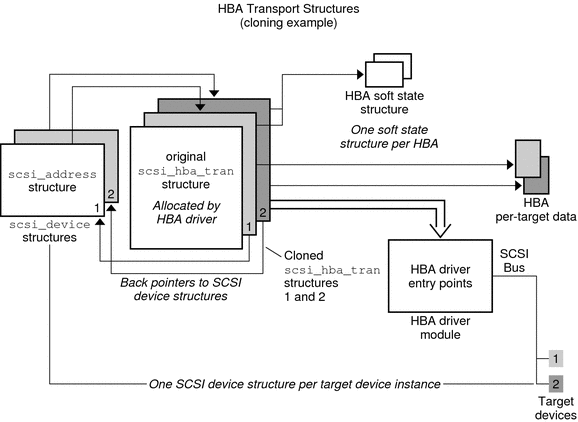

Writing Device Drivers
|
|||||||||||||||||||||||||||||||||||||||||||||||||||||||||
|
Part I Designing Device Drivers for the Solaris Platform 1. Overview of Solaris Device Drivers 2. Solaris Kernel and Device Tree 5. Managing Events and Queueing Tasks 7. Device Access: Programmed I/O 10. Mapping Device and Kernel Memory 14. Layered Driver Interface (LDI) Part II Designing Specific Kinds of Device Drivers 15. Drivers for Character Devices 18. SCSI Host Bus Adapter Drivers Introduction to Host Bus Adapter Drivers HBA Driver Dependency and Configuration Issues Entry Points for SCSA HBA Drivers SCSI HBA Driver Specific Issues 19. Drivers for Network Devices Part III Building a Device Driver 21. Compiling, Loading, Packaging, and Testing Drivers 22. Debugging, Testing, and Tuning Device Drivers 23. Recommended Coding Practices B. Summary of Solaris DDI/DKI Services C. Making a Device Driver 64-Bit Ready |
SCSA HBA InterfacesSCSA HBA interfaces include HBA entry points, HBA data structures, and an HBA framework. SCSA HBA Entry Point SummarySCSA defines a number of HBA driver entry points. These entry points are listed in the following table. The entry points are called by the system when a target driver instance connected to the HBA driver is configured. The entry points are also called when the target driver makes a SCSA request. See Entry Points for SCSA HBA Drivers for more information. Table 18-1 SCSA HBA Entry Point Summary
SCSA HBA Data StructuresSCSA defines data structures to enable the exchange of information between the target and HBA drivers. The following data structures are included: scsi_hba_tran() StructureEach instance of an HBA driver must allocate a scsi_hba_tran(9S) structure by using the scsi_hba_tran_alloc(9F) function in the attach(9E) entry point. The scsi_hba_tran_alloc() function initializes the scsi_hba_tran structure. The HBA driver must initialize specific vectors in the transport structure to point to entry points within the HBA driver. After the scsi_hba_tran structure is initialized, the HBA driver exports the transport structure to SCSA by calling the scsi_hba_attach_setup(9F) function. Caution - Because SCSA keeps a pointer to the transport structure in the driver-private field on the devinfo node, HBA drivers must not use ddi_set_driver_private(9F). HBA drivers can, however, use ddi_get_driver_private(9F) to retrieve the pointer to the transport structure. The SCSA interfaces require the HBA driver to supply a number of entry points that are callable through the scsi_hba_tran structure. See Entry Points for SCSA HBA Drivers for more information. The scsi_hba_tran structure contains the following fields: struct scsi_hba_tran {
dev_info_t *tran_hba_dip; /* HBAs dev_info pointer */
void *tran_hba_private; /* HBA softstate */
void *tran_tgt_private; /* HBA target private pointer */
struct scsi_device *tran_sd; /* scsi_device */
int (*tran_tgt_init)(); /* Transport target */
/* Initialization */
int (*tran_tgt_probe)(); /* Transport target probe */
void (*tran_tgt_free)(); /* Transport target free */
int (*tran_start)(); /* Transport start */
int (*tran_reset)(); /* Transport reset */
int (*tran_abort)(); /* Transport abort */
int (*tran_getcap)(); /* Capability retrieval */
int (*tran_setcap)(); /* Capability establishment */
struct scsi_pkt *(*tran_init_pkt)(); /* Packet and DMA allocation */
void (*tran_destroy_pkt)(); /* Packet and DMA */
/* Deallocation */
void (*tran_dmafree)(); /* DMA deallocation */
void (*tran_sync_pkt)(); /* Sync DMA */
void (*tran_reset_notify)(); /* Bus reset notification */
int (*tran_bus_reset)(); /* Reset bus only */
int (*tran_quiesce)(); /* Quiesce a bus */
int (*tran_unquiesce)(); /* Unquiesce a bus */
int tran_interconnect_type; /* transport interconnect */
};The following descriptions give more information about these scsi_hba_tran structure fields:
scsi_address StructureThe scsi_address(9S) structure provides transport and addressing information for each SCSI command that is allocated and transported by a target driver instance. The scsi_address structure contains the following fields: struct scsi_address {
struct scsi_hba_tran *a_hba_tran; /* Transport vectors */
ushort_t a_target; /* Target identifier */
uchar_t a_lun; /* LUN on that target */
uchar_t a_sublun; /* Sub LUN on that LUN */
/* Not used */
};
scsi_device StructureThe HBA framework allocates and initializes a scsi_device(9S) structure for each instance of a target device. The allocation and initialization occur before the framework calls the HBA driver's tran_tgt_init(9E) entry point. This structure stores information about each SCSI logical unit, including pointers to information areas that contain both generic and device-specific information. One scsi_device(9S) structure exists for each target device instance that is attached to the system. If the per-target initialization is successful, the HBA framework sets the target driver's per-instance private data to point to the scsi_device(9S) structure, using ddi_set_driver_private(9F). Note that an initialization is successful if tran_tgt_init() returns success or if the vector is null. The scsi_device(9S) structure contains the following fields: struct scsi_device {
struct scsi_address sd_address; /* routing information */
dev_info_t *sd_dev; /* device dev_info node */
kmutex_t sd_mutex; /* mutex used by device */
void *sd_reserved;
struct scsi_inquiry *sd_inq;
struct scsi_extended_sense *sd_sense;
caddr_t sd_private; /* for driver's use */
};where:
scsi_pkt Structure (HBA)To execute SCSI commands, a target driver must first allocate a scsi_pkt(9S) structure for the command. The target driver must then specify its own private data area length, the command status, and the command length. The HBA driver is responsible for implementing the packet allocation in the tran_init_pkt(9E) entry point. The HBA driver is also responsible for freeing the packet in its tran_destroy_pkt(9E) entry point. See scsi_pkt Structure (Target Drivers) for more information. The scsi_pkt(9S) structure contains these fields: struct scsi_pkt {
opaque_t pkt_ha_private; /* private data for host adapter */
struct scsi_address pkt_address; /* destination address */
opaque_t pkt_private; /* private data for target driver */
void (*pkt_comp)(struct scsi_pkt *); /* completion routine */
uint_t pkt_flags; /* flags */
int pkt_time; /* time allotted to complete command */
uchar_t *pkt_scbp; /* pointer to status block */
uchar_t *pkt_cdbp; /* pointer to command block */
ssize_t pkt_resid; /* data bytes not transferred */
uint_t pkt_state; /* state of command */
uint_t pkt_statistics; /* statistics */
uchar_t pkt_reason; /* reason completion called */
};where:
Per-Target Instance DataAn HBA driver must allocate a scsi_hba_tran(9S) structure during attach(9E). The HBA driver must then initialize the vectors in this transport structure to point to the required entry points for the HBA driver. This scsi_hba_tran structure is then passed into scsi_hba_attach_setup(9F). The scsi_hba_tran structure contains a tran_hba_private field, which can be used to refer to the HBA driver's per-instance state. Each scsi_address(9S) structure contains a pointer to the scsi_hba_tran structure. In addition, the scsi_address structure provides the target, that is, a_target, and logical unit (a_lun) addresses for the particular target device. Each entry point for the HBA driver is passed a pointer to the scsi_address structure, either directly or indirectly through the scsi_device(9S) structure. As a result, the HBA driver can reference its own state. The HBA driver can also identify the target device that is addressed. The following figure illustrates the HBA data structures for transport operations. Figure 18-3 HBA Transport Structures
Transport Structure CloningCloning can be useful if an HBA driver needs to maintain per-target private data in the scsi_hba_tran(9S) structure. Cloning can also be used to maintain a more complex address than is provided in the scsi_address(9S) structure. In the cloning process, the HBA driver must still allocate a scsi_hba_tran structure at attach(9E) time. The HBA driver must also initialize the tran_hba_private soft state pointer and the entry point vectors for the HBA driver. The difference occurs when the framework begins to connect an instance of a target driver to the HBA driver. Before calling the HBA driver's tran_tgt_init(9E) entry point, the framework clones the scsi_hba_tran structure that is associated with that instance of the HBA. Accordingly, each scsi_address structure that is allocated and initialized for a particular target device instance points to a per-target instance copy of the scsi_hba_tran structure. The scsi_address structures do not point to the scsi_hba_tran structure that is allocated by the HBA driver at attach() time. An HBA driver can use two important pointers when cloning is specified. These pointers are contained in the scsi_hba_tran structure. The first pointer is the tran_tgt_private field, which the driver can use to point to per-target HBA private data. The tran_tgt_private pointer is useful, for example, if an HBA driver needs to maintain a more complex address than a_target and a_lun provide. The second pointer is the tran_sd field, which is a pointer to the scsi_device(9S) structure referring to the particular target device. When specifying cloning, the HBA driver must allocate and initialize the per-target data. The HBA driver must then initialize the tran_tgt_private field to point to this data during its tran_tgt_init(9E) entry point. The HBA driver must free this per-target data during its tran_tgt_free(9E) entry point. When cloning, the framework initializes the tran_sd field to point to the scsi_device structure before the HBA driver tran_tgt_init() entry point is called. The driver requests cloning by passing the SCSI_HBA_TRAN_CLONE flag to scsi_hba_attach_setup(9F). The following figure illustrates the HBA data structures for cloning transport operations. Figure 18-4 Cloning Transport OperationSCSA HBA FunctionsSCSA also provides a number of functions. The functions are listed in the following table, for use by HBA drivers. Table 18-2 SCSA HBA Functions
|
||||||||||||||||||||||||||||||||||||||||||||||||||||||||
|